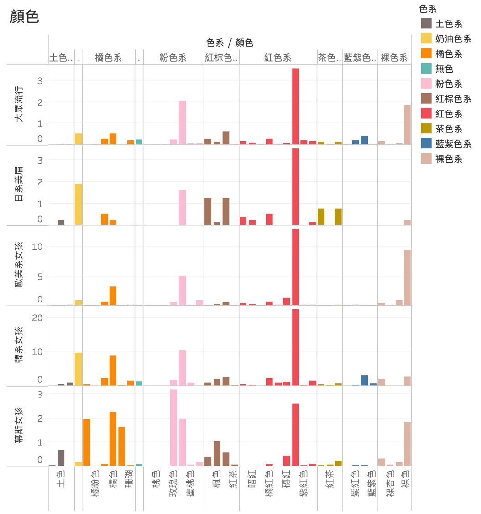

PTT輿情分析-秋冬流行唇妝與顧客分群

平時對化妝品完全沒有概念，但想幫女朋友或朋友挑唇膏當聖誕禮物？別擔心，不用辛苦的看一堆網路文章，觀察PTT網友的用字遣詞自然會告訴你該怎麼挑唇膏
專案簡介
利用python 抓取PTT MakeUP版2022年9/6到12/28所有有關唇膏的文章，進行關鍵字篩選及統計後以K-mean分群法將顧客分成五大群，並對他們各自喜好的唇膏顏色做統計分析。
在這個專案中，我定義留言者對關鍵字使用的多寡為他對關鍵字的需求或偏好。比如一位留言者有護唇膏的需求，我便假設他會在留言中多次提及唇膏。而K-means分群正可以將不同維度中量值相似的向量區分出來，在專案中對應到的就是對一些關鍵字使用程度類似的留言者，我們可以說他們的偏好相近。因此，藉由K-means分群便可以近一步了解市場上偏好各異的消費者族群。 專案中所使用到的code可見於 本連結
1.爬取PTT貼文
為了了解秋冬流行的唇膏，我利用Beautiful Soup 套件抓取9/6到12/28所有文章的標題、文章、留言和作者及留言者，並篩選出標題或文章內包含「唇」的貼文，確保資料探討的內容和唇妝有關。我們可以利用jieba切詞切分出文章出現的字詞，切詞後的貼文可見於下圖
小技巧：切分關鍵詞後可以事先刪除常見字尾或贅詞、PTT符號節省後面處理資料的時間。此外，事先將dict.txt.big.txt載入jieba切詞的字典裡可以更好的切分繁體字詞。
2.篩選關鍵字
為了使jieba套件更好的切出想要的關鍵字，需要將與唇膏有關的關鍵字事先加入jieba的字典裡。由於這個project想探討的是有關顧客對唇膏的偏好，因此我先在網路上搜尋有關挑選唇膏的大原則 1 和化妝方式、技巧的文章 2 3，看出大家選購唇膏原則上依循兩大要點:
-
妝感，大致可分為水潤（亮面）、霧面及介於兩者之間的水霧三種，而相關產品又可分為唇膏、唇釉（唇露/唇萃）、唇蜜、口紅四種
-
唇膏顏色，除了自身喜好和流行，女生也會依據自己的膚色選擇適合自己的顏色，比如粉色較適合皮膚白皙的女生而不是和小麥膚色的女生。另外還會考慮唇膏本身的顯色度、飽和度和能不能顯白等等
化妝技巧的部分秋冬因為有嘴唇乾燥的問題會先上一層護唇膏，為了避免原來唇色影響唇膏顯色或沾黏的問題會先抹上蜜粉打底和遮瑕。此外，最近韓系的暈染唇妝也很流行。唇膏的薄擦或後擦、疊色則是因人喜好而異。其他還有關於唇膏在日常使用的掉色程度、保濕度、滋潤度等等的考量
對妝容感覺的偏好我分為可愛、仙氣、性感、優雅知性等等的風格
參考這些文章後，我將這些關鍵字和專有名詞加入 excel檔，並載入jieba的字典裡，再利用jieba切詞將文章標題和內文切成字詞後進行統計，並存成excel檔。 我們可以看到使用頻率最頻繁的十個字如圖所示：
表中有一些和美妝無關或無法從字詞得到資訊的字詞（例如：都、喜歡、好看、擦、美…）， 這些詞會妨礙我們的分群觀察，所以我將這些字去除。 去除無關的關鍵字後，根據字詞出現的頻率畫出文字雲：
可以發現聲量最多的關鍵字有：唇膏、唇彩、霧面、秋冬、唇釉、護唇膏、唇紋等等，回去看PTT幾篇文可以發現秋天最流行的唇妝是霧面，且大家普遍有乾唇問題所以會去找護唇膏。
另外，我假設出現頻率5次以上的字詞都是jieba切得比較精準的字，所以我判斷該字與唇膏有關後便會直接保留這些關鍵字。至於其他關鍵字我則用程式篩選
至於我篩選這些出現頻率4次以下關鍵字的方式如下：
-
觀察聲量較高的關鍵字，歸納出與這些關鍵字意思類似的字可能包含哪個字，例如化妝品產品或PTT網友表達霧面的字可能有霧光、柔霧、霧唇等等。而我利用程式篩選出所有包含霧的關鍵字，再看關鍵字的字面意思決定要不要將關鍵字保留。例如「噴霧」雖然也包含誤字，但顯然和霧面無關，因此我會刪除。而若該字與霧面有相似意思，例如「霧唇」，我會將該字保留
-
由於有關顏色的關鍵字很雜又很廣，例如光是粉色可能就有「粉紅」、「粉」、「偏粉」、「粉嫩」等等的表達方式，因此我也用程式篩選出可能表達顏色的字，比如想找出所有表達粉紅的關鍵字就先篩選出所有包含「粉」的字再進行人為判斷。
在找大家討論的顏色時，我除了會上網查秋冬流行的唇色（例如楓紅、奶茶棕等等），也會利用程式篩選出包含「色」的字，並參考這些字的出處文章，再決定是否將這個顏色納入關鍵字中（例如文章提及「白色」並不是指白色唇膏，而是唇膏盒的包裝）
3. 整理關鍵字
在這些關鍵字中，許多字的字面不同，卻代表同一意思。比如「潤感」、「潤光」都在表達「潤澤」，於是我就建立excel表，將「潤感」、「潤光」儲存在「關鍵字」coulmn，「潤澤」儲存在「對應」coulmn。最後整理完的關鍵字和顏色無關的可見於字典.xlsx，和顏色有關的則存在顏色.xlsx。
4. 根據不同留言帳號，統計出他們各自使用關鍵字的次數
想要分析每位留言者的偏好其中一個方式就是找到他們喜歡的關鍵字。在這個環節，我統計每則留言出現的目標關鍵字，再根據留言帳號疊加起來，得到每位留言者在他所有的留言中使用目標關鍵字的總數。
然而光看留言有會無法知道留言者在探討的議題，這時我們需要回去看留言所指的內文在寫什麼。因此我也將留言所指的內文納入考量，以得到更完整的留言者想法。我們的目標是利用統計關鍵字在留言中出現的次數得知留言者的偏好。而比起內文，留言本身更能代表留言者。所以在計算每則留言出現的目標關鍵字次數時，我的算法是以一比九的權重將內文出現的關鍵字次數與留言中出現的關鍵字次數相加起來。
在上一個環節，我建立了字面不同的相似關鍵字對應到同個字詞的表格。在統計目標關鍵字出現次數的過程中，每當關鍵字出現我就會利用這個表格將關鍵字對應到所屬的字詞類別，最後再相加起來。例如「潤感」、「潤光」都在表達「潤澤」，所以在統計完「潤光」、「潤感」出現次數後要把這兩個關鍵字相加起來，得到「潤澤」出現的次數。如此一來便能較精準的算出目標關鍵字真正的聲量，避免目標關鍵字因表達方式不同而在文章及留言被忽略的問題。
在得到所有目標關鍵字在每則留言出現的個數後，我依據留言者將他們疊加起來，最後算出每位留言者使用目標關鍵字的次數，並用這些數字代表留言者對不同主題偏好的程度。
5. K-means分群
在上一步我們得到每個留言者對每個關鍵字的使用次數，詳細資料可見於excel檔
而這些關鍵字使用次數代表偏好程度，因此我們可以用K-Means分群法將這些統計量做向量分群，得到需求、偏好各字不同的族群，掌握市場上不同面貌的消費者。
為了知道分群數多少是最好的，我寫了for迴圈將資料做多次k-means分群，分群數介於1~15之間。最後將分群數對inertia (每個點到所屬群質心距離的和，用來衡量分群的誤差)，結果如下

分的群數愈多，通常 inertia會越小，當群數等於資料點時必為零，其中的道理和隨機森林切得越細在訓練資料的誤差上越小相似。而要衡量分多少群最好，除了要讓inertia盡可能的小，還要讓分群數盡可能的少。所以一般來說大多會選擇 inertia 變化開始明顯變小附近的轉折點。最後我選擇n=6作為分群數。
在做k-means分群時，我只採用與顏色無關的關鍵字作為feature，減少分群的複雜度。我們也能看看分群後的需求不同的消費者是不是比較偏好某些顏色。
視覺化成果
我們共可得到六群顧客，而由於group 2 只有1人因此我不討論它。以下是去除group 2資料，用Tableau視覺化的成果：

從表示各群人數的圓餅圖我們能看到，group0 人數440人為最大宗，group 5 人數84人為第二大群，group 1、3、4人數20人以下為小眾。
我用Tree map表示每群顧客對不同關鍵字的偏好程度，在Tree map中板塊越大者關鍵字出現次數越多，代表該族群消費者對該關鍵字越偏好，需求也越高。
從這五張Tree map我們能看到：
-
不管是哪群顧客，霧面、秋冬幾乎都是出現最多的關鍵字。這可能是因為秋冬最流行霧面唇妝。
-
group 0為最大族群（440人），因此我定義該群為大眾流行，也代表大多數女孩的需求。
Group 0 大眾流行的Tree map告訴我們：
＊在唇妝上大家最偏好流行的霧面，潤澤次之
＊功能上她們最注重護唇，也很注重滋潤度和保濕度，喜歡用羊脂膏
＊她們普遍擔心唇紋問題，可能是秋冬較乾燥且她們常用相較其他妝感較顯唇紋的霧面唇膏的緣故
＊風格上他們較偏好可愛、少女風格
＊除了護唇也很注重顯白，顯氣色的腮紅和紅唇討論度也蠻高的
＊喜歡薄擦唇膏
- group1 有8人，他們特別偏好日系妝容（相較其他群該關鍵字使用次數多），也很注重唇膏的滋潤度、唇紋問題。她們在擦唇膏前會先打底，顏色上會選可以顯白的，此外除了流行的霧面唇膏她們也偏好潤澤唇膏。
- group 3 有18人，特別偏好自然妝容，比起其他群的女孩更注重唇部保養和氣色，且對香奈兒的超炫耀系列討論度特別高，顏色上會挑顯白、深色的顏色，也很注重唇膏的顯色，推測是喜歡歐美風格的女孩
- Group 4 有17人，他們非常注重顯白，也喜歡深色唇膏。風格偏好溫柔可愛的日常風，與其他群不同的是她們特別偏好暈染唇妝，上唇膏前會打底薄擦，也會注重搭配眼妝。另外，他們似乎也偏好限量商品。因為他們喜歡暈染唇妝，所以我叫他們韓系女孩。
- Group 5有84人，除了流行的霧面唇妝，她們注重絲絨、粉霧那種較朦朧的感覺，顏色上喜歡暖系，注重唇膏的顯色和潤澤。
各族群對顏色的偏好
在依留言者對唇膏的需求進行分類後，我也統計每個族群提到有關唇膏顏色關鍵字的次數作為判斷他們對顏色偏好的依據。
為了方便比較不同族群間對各顏色的偏好程度，我將每個族群提及顏色關鍵字的次數統計起來並除以他們的人數，計算族群中平均每個人提及顏色關鍵字的次數作為比較的標準。
視覺化後的結果如下圖：

首先我們先分析每個族群喜歡的顏色：
- 除了Group5 外，其他族群幾乎都是最偏好紅色系唇膏。
- 大眾流行以紅色為最大宗，粉色系其次，裸色系第三。其他還有紅棕色系、橘色系、奶油系質感唇膏的需求存在。
- Group 1日系美眉偏好紅色與紅棕色系的唇膏，同時他們對土色系唇膏偏好度大於其他族群，因此我判斷他們喜歡紅中帶棕、紅中帶咖啡色的唇膏。另外，他們也偏好具奶油質感的唇妝。
- Group 3喜歡歐美風、香奈兒超炫耀的女孩以紅色唇膏為需求最大宗，此外，他們也是除了Group4韓系女孩外對紅色系需求最高的族群。值得注意的是，他們對裸色系唇膏的需求比起其他族群更高，符合歐美女性的偏好。而比起其他族群，他們對茶色、紅棕、土色唇膏需求較少
- Group 4韓系女孩對紅色唇膏需求最大，而且也是各系女孩中對紅色唇膏需求最大的。由前段分析推測可能是他們比起其他族群更注重顯白的緣故。另外，他們也偏好粉色、橘色較清新的色系，和日系女孩一樣也偏好奶油系質感的唇膏，對裸色、紅棕咖啡、土色茶色需求相對少。
- Group 5慕斯女孩與其他系女孩不同，對紅色唇膏需求反而沒那麼大。他們喜歡橘色系唇膏，粉色系次之。呼應前段分析顯示他們偏好暖色系的部分。推測他們可能喜歡活潑清新的風格。
若將各色系顏色細分，各族群偏好則如下圖

顏色偏好（顏色）
較值得注意的地方是Group1日系女孩在紅棕色系中偏好栗子色;Group5慕斯女孩則偏好楓色，此外他們對粉色系的偏好也以玫瑰色為主，橘色系則是橙色與栗橘。
如何將專案結果運用於實務
除了用來釐清市場需求，了解顧客族群的樣貌，這個結果可以應用在推薦系統上。我們可以搜集消費者在留言平台上的留言，然後萃取他使用的關鍵字，進行統計後丟入預先訓練好的K-means模型預測出他可能是屬於哪類型的消費者，再做個人化推薦。比如我們預測消費者是歐美系女孩，我們便可多推薦超炫耀唇膏或紅色、裸色系的唇膏。
此外，我們也可以應映分析出來的市場需求決定怎麼推廣或改良我們的產品。從視覺化報表中，我們可以看到大眾的需求圍繞著霧面唇膏、護唇保濕、避免唇紋、顯白等等，所以我們便可朝著滿足這些需求的方向改良、廣告我們的唇膏。另外，大眾普遍喜歡可愛風格，我們便可找形象類似的女明星來代言產品。
改進方向
這個專案是以搜集留言者關鍵字為導向，而我們對關鍵字選擇和了解程度會很大程度的影響分析結果。因此可以事先諮詢相關專家，選擇能精準描述唇膏相關需求的關鍵字，並了解關鍵字不同的表達方式，可能會比自己上網找文章或直接從jieba切分的字詞了解有效率且精準。